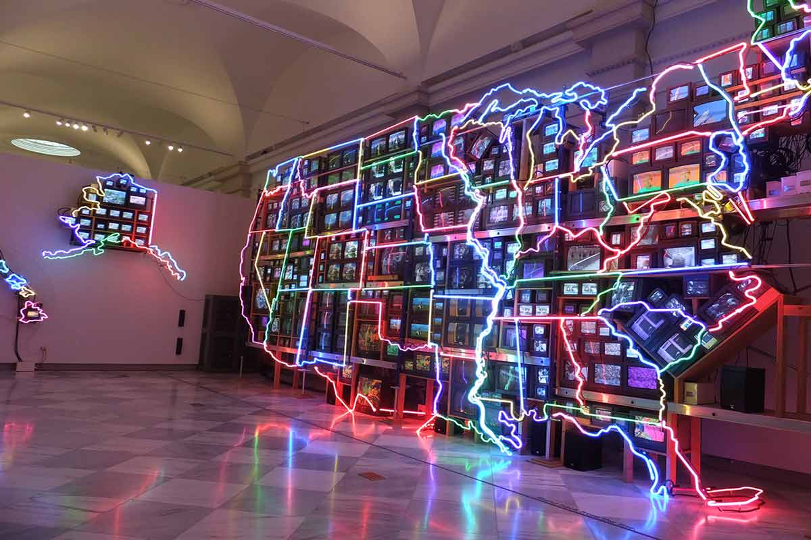

Borough of Manhattan Community College
Media Arts & Technology Departments

Video Arts & Technology
The Video Arts and Technology Program provides a dynamic education in video, audio and television production.
The program prepares students for positions in the entertainment industry, electronic journalism, audiovisual
production companies, broadcast and cable networks, and corporate communications departments. It combines
extensive hands-on experience with theoretical coursework in a comprehensive academic program.
VAT students work in a digital environment in BMCC's state of the art television studios, audio studio, and
postproduction laboratories. Students learn the entire process for creating professional video and audio programs
from writing a script and creating a budget, to shooting a scene and editing a final cut. All VAT students do an
internship at a professional media facility.
Upon successful completion of the requirements listed below, students earn an Associate in Science (A.S.) degree.
Most courses in the Video Arts and Technology program (VAT courses) are restricted to students enrolled in the
program.
Course Listings